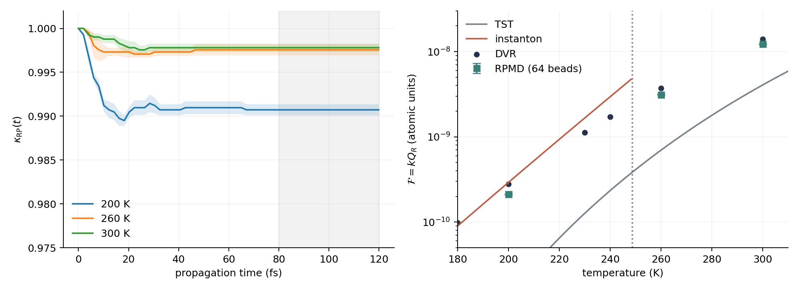

Chemical Reaction Computation - Part VIII
Instantons and RPMD: Two Ways to Calculate a Rate
The previous calculation ended with a stationary ring of coordinates and a fluctuation prefactor. A familiar alternative starts with an ensemble, propagates trajectories, and extracts a rate from a correlation plateau. RPMD follows that second route. Why, then, does it keep appearing next to instanton theory?
The connection is in the statistical structure, not an instruction to animate the optimized instanton. Both calculations use spring-linked imaginary-time configurations. Ordinary instanton theory evaluates a dominant saddle and its fluctuations; RPMD samples a distribution and estimates reactive flux with auxiliary real-time dynamics. These are different approximations, and neither automatically becomes exact because the ring contains more beads.
1. What we can already reuse
Three earlier articles supply the foundations. They are prerequisites and useful comparisons, not three implementations of the same method.
| Existing article | Already established | What remains here |
|---|---|---|
| PIMD V: From PIMD to RPMD | The Hamiltonian, thermal momenta, trajectory estimator, and harmonic position-correlation test. | A reactive dividing surface and an absolute thermal flux, rather than a position autocorrelation. |
| Comparing Trajectory Dynamics with Kubo Flux-Side Correlations | Flux-conditioned sampling, CSSH propagation, and restoring the rate prefactor. | The many-bead nuclear ensemble and its recrossing correction. CSSH is not relabeled as RPMD. |
| From Reactants or the Dividing Surface? An N=1 Equivalence Test | A change of sampling measure between two launch constructions for a fixed one-bead hopping model. | Finite-bead convergence and the approximation made by RPMD dynamics. That earlier forward-quadrature convergence gate remains open. |
We therefore do not repeat the path-integral or Kubo derivations. We keep the same convention: \(\beta_N=\beta/N\), \(\omega_N=N/(\beta\hbar)\), and the Hamiltonian \(H_N\) is the sum over beads. Its equilibrium weight is \(e^{-\beta_N H_N}\). Physical masses are used for the production dynamics.
2. The common object, and the point of departure
Recall the coordinate part \(U_N\) of that Hamiltonian and compare it with the discretized imaginary-time action in Part VII:
This identity explains why the same extended configurations appear in both methods. A stationary instanton is a stationary point of this coordinate function. It does not imply that every equilibrium ring is an instanton, or that the imaginary-time orbit is a physical trajectory.
Ordinary instanton theory finds a relevant noncollapsed saddle, expands around it, treats its special modes appropriately, and combines the action with fluctuation factors to obtain a rate. RPMD instead samples the thermal distribution on a dividing surface and releases its configurations under \(H_N\). It does not require a quadratic approximation to that sampled distribution, but its subsequent dynamics is approximate quantum dynamics.
Richardson and Althorpe (2009) established a deep-tunneling connection between ring-polymer rate theory and semiclassical instanton theory. The common saddle helps explain the connection; it is not an equality of all prefactors or of the two numerical rates at arbitrary temperatures. Our small example below tests a crossover neighborhood, not the full deep-tunneling asymptotic result.
3. A rate needs both weight and commitment
Choose the centroid dividing surface \(f(\mathbf q)=\bar q=N^{-1}\sum_jq_j=0\), with products on the positive side. Its velocity is \(\dot f=\bar p/m\). In the phase-space convention just recalled, define
The initial velocity is signed. A negative-going crossing contributes negatively if its later trajectory is on the product side. Counting positive launches that end in products, without the corresponding negative-flux term or a justified equivalent estimator, does not evaluate this expression.
The first factor is the positive equilibrium flux through the surface: how often the system reaches it. The second removes crossings that do not contribute to sustained transfer. This is the useful computational split in Craig and Manolopoulos's refined rate formulation (2005). Changing a dividing surface changes the two factors; the properly converged RPMD rate is surface-independent under the usual rate-plateau conditions.
Do not confuse \(\kappa_{\rm RP}\), a dynamical recrossing correction to ring-polymer TST, with \(k_{\rm quantum}/k_{\rm classical\,TST}\) in Part II. The latter can be much greater than one even when the former is close to one.
Nor is the finite-bead expression above literally the exact ordinary Kubo flux-side trace from the earlier article: the centroid side function and its nonzero \(0^+\) limit need that distinction. Different rate correlation functions can share a plateau without having identical short-time curves. Here we compare plateaus, not microscopic time traces between incompatible definitions.
4. A complete, small calculation
Reuse the single-surface Eckart barrier of Part V: \(V(q)=0.01\operatorname{sech}^2(1.5q)\), \(m=1836.152673\), in atomic units. Its \(T_c\) is about 249 K. There are no electronic hops. The observable is the thermal flux numerator \(\mathcal F=kQ_R\), not a molecular first-order rate obtained from the arbitrary length of a numerical box.
For this simple open channel, free-ring configurations provide a convenient reference ensemble. Fix their centroid to zero and sample their nonzero normal modes independently. The normal-coordinate variance is \(N/(\beta m\Omega_k^2)\), where \(\Omega_k=2\omega_N\sin(\pi k/N)\). Set the centroid mode exactly to zero.
Let \(\langle\cdot\rangle_{0,c}\) denote this normalized free-ring ensemble. Only the physical potential is missing from its probability density. Consequently, its reweighting factor and the absolute positive flux are
The prefactor is not fitted. The free coordinate density per unit length is \(\sqrt{m/(2\pi\beta\hbar^2)}\); the positive Maxwell velocity integral is \(1/\sqrt{2\pi\beta m}\). Their product gives it. For \(N=1\), every constrained configuration is \(q=0\), so the formula reduces exactly to \(e^{-\beta V_0}/(2\pi\beta\hbar)\), classical TST.
- Measure the statistical factor. Draw 131,072 independent free rings per seed, evaluate their weights, and average them. Record the importance effective sample size \((\sum w)^2/\sum w^2\).
- Prepare the surface ensemble. Resample 1,024 configurations with probabilities proportional to those weights. This is importance sampling of the interacting constrained distribution, not an optimized instanton with noise added.
- Attach flux-conditioned momenta. Internal modes have Gaussian momenta. Draw positive centroid momentum from \(\rho_+(\bar p)=(\beta\bar p/m)e^{-\beta\bar p^2/(2m)}\), or equivalently \(\bar p^2/(2m)\sim\mathrm{Exp}(\beta)\).
- Launch both signs. Propagate each pair \((\mathbf q,\mathbf p)\) and \((\mathbf q,-\mathbf p)\). The unbiased conditional estimator is the average of \(h[\bar q_t(\mathbf q,\mathbf p)]-h[\bar q_t(\mathbf q,-\mathbf p)]\). Momentum reversal preserves the thermal measure and supplies the missing negative-flux contribution.
- Read a plateau and restore the weight. Multiply this \(\kappa(t)\) by the independently estimated static factor. Use independent whole-run seeds to estimate uncertainty in their product, including both sampling stages.
Production uses a symmetric potential-kick / exact free-ring normal-mode evolution / potential-kick splitting, with no thermostat and no centroid constraint after release. Propagate to 120 fs; compare the 40–80 and 80–120 fs windows. The two time labels must remain separate: bead index labels imaginary time, whereas this 120 fs is the auxiliary real-time propagation duration.
Direct free-ring importance sampling is convenient here, not a general molecular algorithm. At lower temperatures or on more complicated surfaces it may miss rare, high-weight rings. Then constrained equilibrium sampling and a free-energy calculation are needed. A large number of launched trajectories cannot repair a poorly sampled initial distribution.
5. What the numerical comparison tells us
Each quoted uncertainty is one standard error from four independent complete runs, not the spread of saved points along one plateau. The production results use 64 beads and a 4-a.u. step (0.0968 fs).
| Temperature | Classical TST flux | Ordinary instanton flux | RPMD flux ± SE | DVR flux | RPMD / DVR |
|---|---|---|---|---|---|
| 200 K | \(1.401\times10^{-11}\) | \(2.912\times10^{-10}\) | \((2.119\pm0.014)\times10^{-10}\) | \(2.786\times10^{-10}\) | 0.761 |
| 260 K | \(6.963\times10^{-10}\) | Outside ordinary formula's range | \((3.138\pm0.005)\times10^{-9}\) | \(3.719\times10^{-9}\) | 0.844 |
| 300 K | \(4.057\times10^{-9}\) | Outside ordinary formula's range | \((1.2248\pm0.0022)\times10^{-8}\) | \(1.4030\times10^{-8}\) | 0.873 |
The recrossing factors are 0.9907, 0.9976, and 0.9978, respectively. Most of the enhancement over classical TST is already in the sampled statistical factor; the dynamical correction is small on this symmetric barrier. Nevertheless, RPMD underestimates the DVR flux by about 24%, 16%, and 13%. At 200 K the ordinary instanton approximation is closer to DVR than RPMD is. There is no universal ranking implied by using more sampling.
| Numerical check | Observed result | Scope |
|---|---|---|
| 32 → 64 beads | Flux changes: 0.45%, 0.29%, 0.07% at 200, 260, 300 K. | Two-level discretization check, not an infinite-bead extrapolation. |
| 4 → 2 a.u. step, paired seeds at 200 K | The 80–120 fs rate estimates coincide at the sampled resolution; maximum energy drift per bead falls from \(1.37\times10^{-6}\) to \(3.62\times10^{-7}\) Ha. | Checks both the target flux and integration error; identical endpoint classifications do not prove zero time-step error. |
| 40–80 versus 80–120 fs | The largest change of the mean \(\kappa\) is 0.00015. | Plateau-window stability over the tested interval. |
| Importance sampling | Minimum effective sample size exceeds 8,500 out of 131,072 proposals across these runs. | Independent-seed errors include reweighting noise; this does not certify colder or higher-dimensional sampling. |
| One-bead limit at 300 K | \(\kappa=1\); the computed flux agrees with classical TST to floating-point precision. | A normalization and launch-estimator check for this single barrier. |

The DVR points are reused from the actual sinc-DVR Hamiltonian calculation in Part V, with its box, grid, cutoff, and plateau checks. Its symmetrically thermalized flux-side function is not the RPMD curve on the left. Their common comparison quantity is the rate numerator on the right. No new lower-temperature DVR result is claimed.
A stable RPMD plateau answers whether the auxiliary flux has settled. A bead comparison tests discretization. A time-step comparison tests propagation. None alone proves agreement with quantum dynamics. The gap against DVR is therefore a result to report, not something to eliminate by renormalizing the trajectory count.
6. What RPMD adds—and what it does not
Compared with ordinary instanton theory, RPMD replaces a local saddle evaluation by a sampled equilibrium factor and adds an explicit recrossing calculation. It remains defined above the ordinary instanton crossover. That is a change of computational approximation, not a guarantee of a smaller error everywhere.
Compared with classical trajectories, it carries a finite-temperature quantum-nuclear statistical distribution in an extended phase space. But the individual beads are not independent atoms, and their trajectories are not exact quantum paths. Quantum interference, coherent dynamics, and method-dependent dynamical artifacts are not repaired simply by increasing \(N\).
Finally, this example has one potential surface. Nonadiabatic ring-polymer methods require additional electronic variables or approximations. The existence of an earlier CSSH reproduction does not validate those extensions. The useful question for any next calculation is still: which initial measure, which dynamics, and which rate estimator are actually being tested?
Code and data
Download eckart_rpmd.py and its sibling eckart_four_methods.py. In the website checkout, with NumPy, SciPy, and Matplotlib installed:
python assets/code/reaction-dynamics/eckart_rpmd.py --output assets/data/reaction-dynamics/rpmdThe plot also reads the published Part V reference CSV. The linked script records individual independent runs, summary and numerical diagnostics, and the full saved recrossing curves. The 200 K half-step calculation uses the same seeds and initial samples as its full-step counterpart for a paired check.